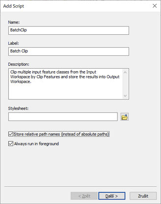

Lekce 12: Uživatelská rozhraní nástrojů
V této kapitole si předvedeme, jak lze ke skriptu, využívajícímu nástroje ArcGIS, vytvořit uživatelské rozhraní tak, aby nástroj vypadal a choval se podobně, jako ostatní vestavěné nástroje v ArcToolbox. Jde o podobnou věc, jakou již znáte z lekce 2, kde jste vytvářeli uživatelská rozhraní k modelům z Model Builderu.
Jednoduché rozhraní
Tvorbu nástroje si předvedeme na jednoduchém příkladu nástroje BatchClip, který jste vytvářeli v lekci 10 (viz úlohu X). Příslušný skript může vypadat např. takto:
import arcpy, os.path
# Vstupní parametry
input_folder = r"C:\cesta\ke\slozce\se\vstupnimi\daty"
clip_features = r"C:\cesta\k\polygonove\vrstve\kterou\se\bude\orezavat.shp"
output_folder = r"C:\cesta\ke\slozce\s\oriznutymi\vrstvami"
# Nastavení prostředí
arcpy.env.workspace = input_folder
arcpy.env.overwriteOutput = True
# Dávkové zpracování nástrojem Clip
shps = arcpy.ListFeatureClasses()
for shp in shps:
output = os.path.join(output_folder, shp[:-4] + "_clipped.shp")
arcpy.Clip_analysis(shp, clip_features, output)
Úkol 1. Rozeberte si skript tak, aby vám byl jasný smysl každého řádku. Vyzkoušejte v praxi, že skript funguje.
Vytvořit ke skriptu uživatelské rozhraní znamená zajistit, aby vstupní parametry výpočtu (uvedeny schválně na začátku skriptu v samostatní sekci Vstupní parametry) mohl před spuštěním zadávat uživatel v nějakém přívětivém grafickém rozhraní. Jeho tvorba má dvě části: (1) příprava samotného grafického rozhraní a (2) úprava skriptu tak, aby s tímto rozhraním komunikoval.
Tvorba grafického rozhraní začíná v okně Catalog programu ArcMap. Nástroj - podobně jako v případě Model Builderu - musí existovat v nějakém toolboxu. Pokud tedy žádný připravený nemáte, je třeba jej nyní vytvořit:

(Pochopitelně, v jednom toolboxu můžeme mít uloženo více nástrojů.)
Po vytvoření toolboxu do něj přidáme nový nástroj pomocí kliknutí na něj pravým tlačítkem myši a volbou Add -> Script:

Tím se otevře dialogové okno Add Script, které nás provede tvorbou grafického rozhraní. Na první stránce je třeba zadat název (Name) a popisek (Label) nástroje. Zatímco název by neměl obsahovat diakritiku a mezery, popisek bude tím, pod čím se bude nástroj zobrazovat v toolboxu (může tedy obsahovat mezery a diakritiku). V parametru Description je možné zadat stručný popis fungování nástroje, který se bude zobrazovat v okně nástroje. Parametr Stylesheet umožňuje vybrat jiný než výchozí styl rozhraní, včetně vlastních uživatelsky definovaných stylů. Vlastní styly zde nebudeme řešit, použijeme výchozí styl (tj. ponechte políčko nevyplněné). Poslední dva parametry, zaškrtávací políčka Store relative pathnames a Always run in foreground je dobré obě zaškrtnout. To první způsobí, že cesta ke skriptu (kterou budeme zadávat hned v dalším kroku) bude brána relativně k poloze toolboxu. To usnadní případnou distribuci nástroje na jiné počítače. Druhá možnost zase zajišťuje, že nástroj vždy poběží na popředí (nikoli na pozadí), což je obecně bezpečnější a stabilnější možnost.

Zprávy o průběhu výpočtu
Odvozené parametry
Nápověda
Podmíněné nastavení parametrů
Python Toolbox
Shrnutí
Úlohy
- Vytvořte uživatelské rozhraní k nástroji MultiBuffer.